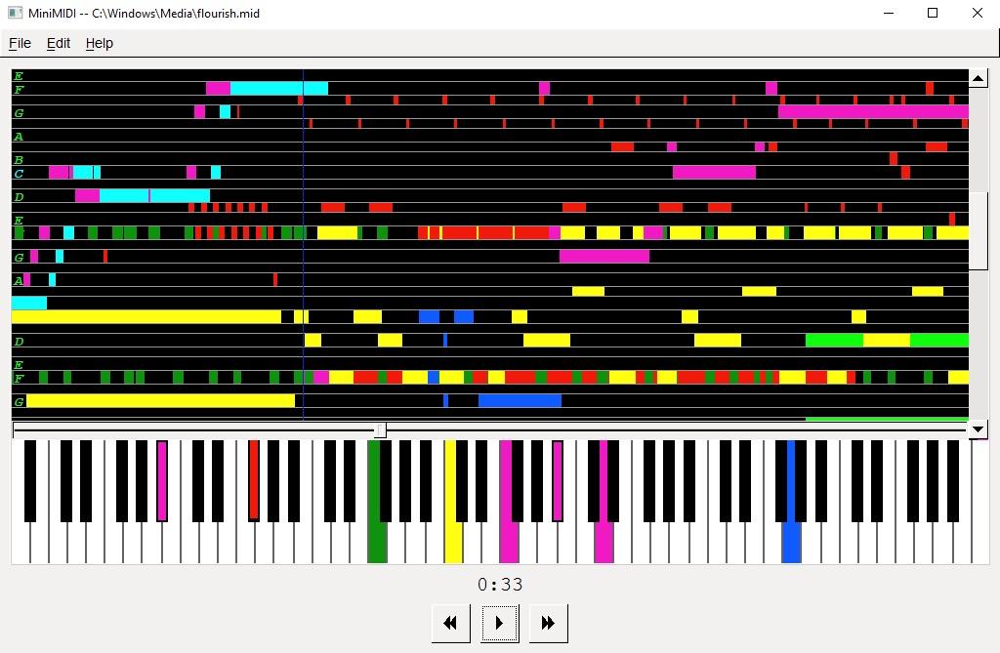

MiniMIDI
About
MiniMIDI is a simple, lightmeight, cross-platform MIDI player and editor, written in C++ with FLTK, FluidSynth, and libmidi. It is a work in progress.
Screenshot
Download
- Here's a Windows test build you can play around with. Includes S. Christian Collins' GeneralUser GS soundfont.
- Github